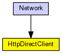

This documentation is released under the Creative Commons license
This documentation is released under the Creative Commons licenseEin HTTP-Client-Modul, das ohne Netzwerk mit einem HTTP-Server-Modul kommuniziert
The following diagram shows usage relationships between types. Unresolved types are missing from the diagram.
The following diagram shows inheritance relationships for this type. Unresolved types are missing from the diagram.

| Name | Type | Description |
|---|---|---|
| Network | network |
Das Netzwerk |
| Name | Type | Default value | Description |
|---|---|---|---|
| httpHost | string |
< Hostname für Host-Feld im HTTP-Request |
|
| page | string |
< Name des Dokuments im HTTP-Request |
| Name | Direction | Size | Description |
|---|---|---|---|
| in | input | ||
| out | output |
// // Ein HTTP-Client-Modul, das ohne Netzwerk mit einem HTTP-Server-Modul kommuniziert // simple HttpDirectClient { parameters: string httpHost; //< Hostname für Host-Feld im HTTP-Request string page; //< Name des Dokuments im HTTP-Request gates: input in; output out; }
This documentation is released under the Creative Commons license